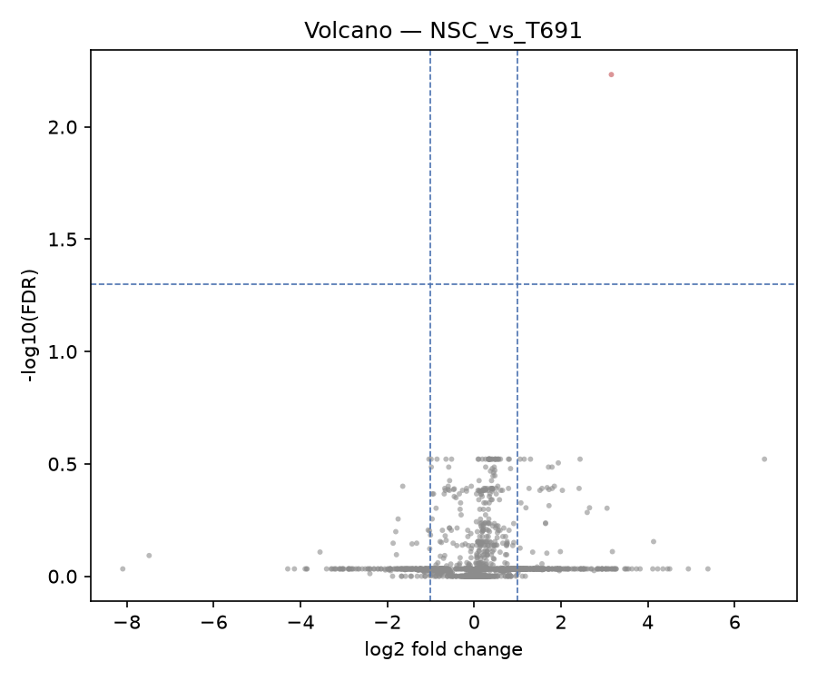
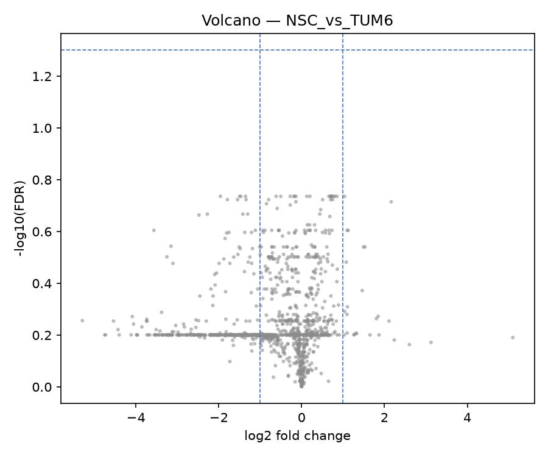
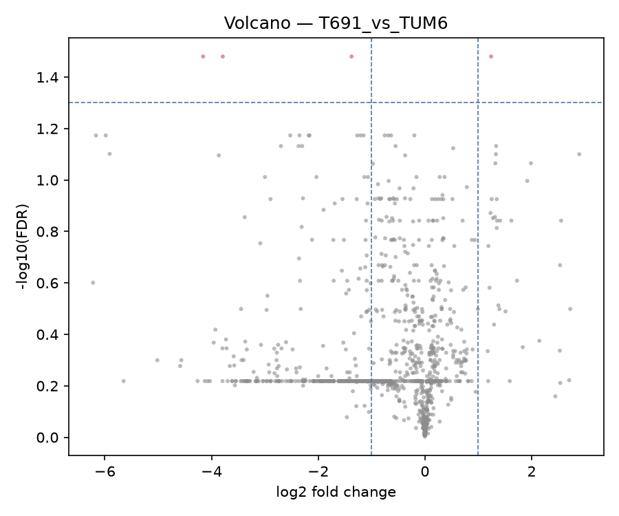
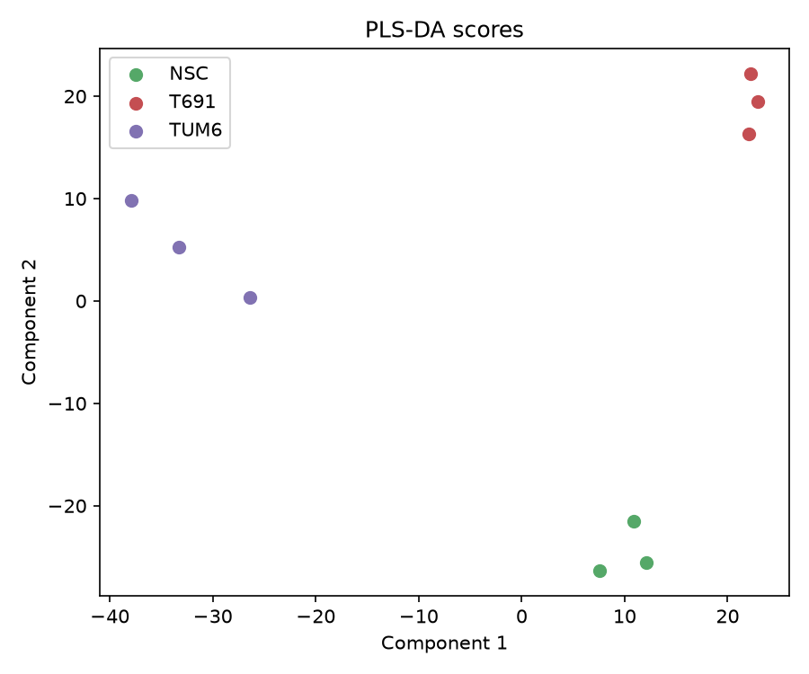
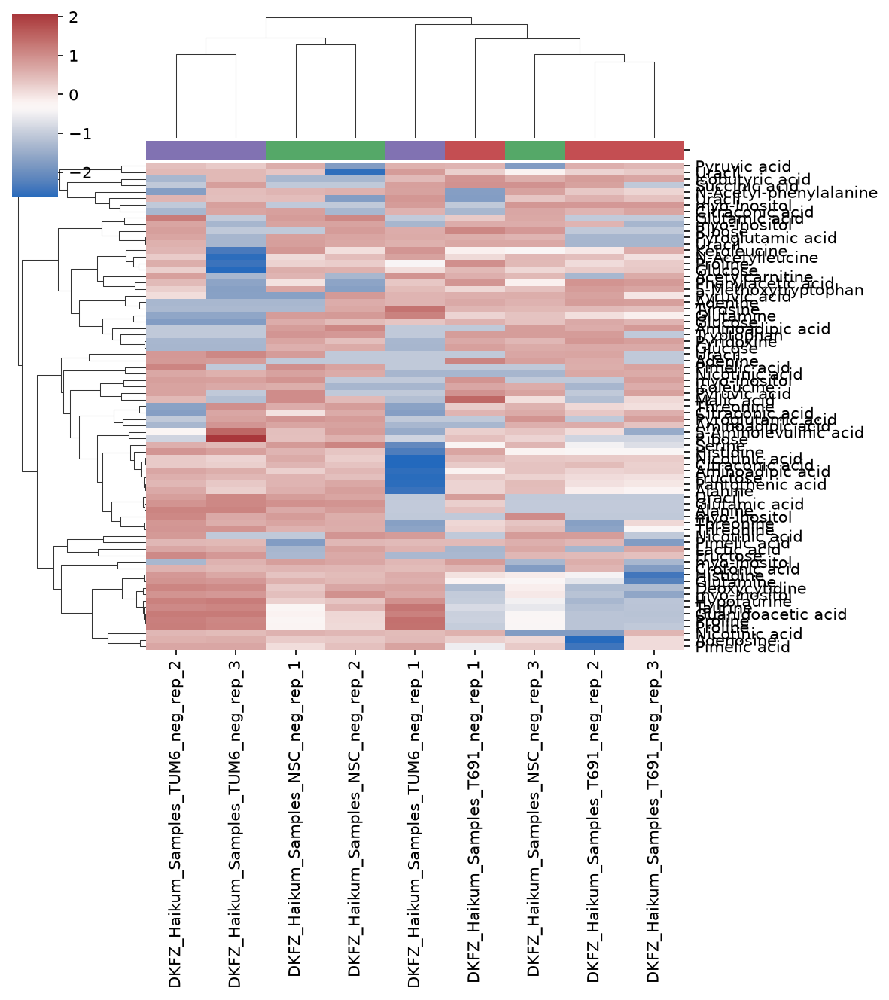
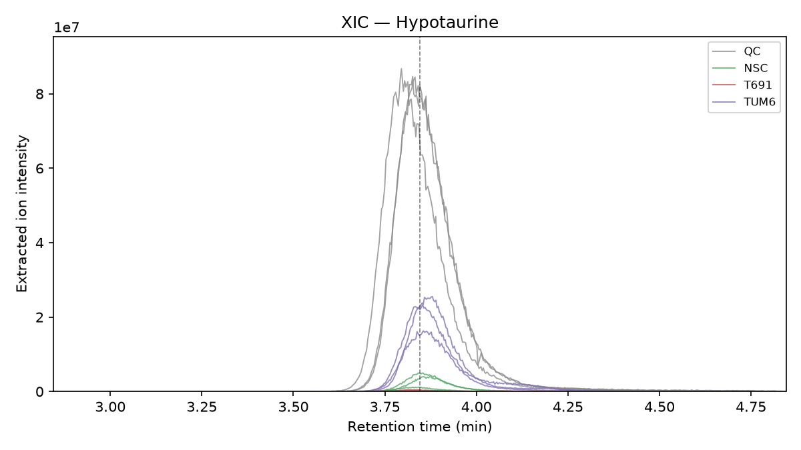
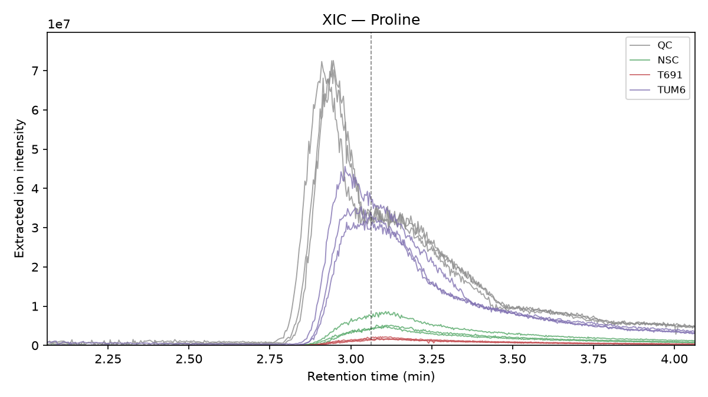
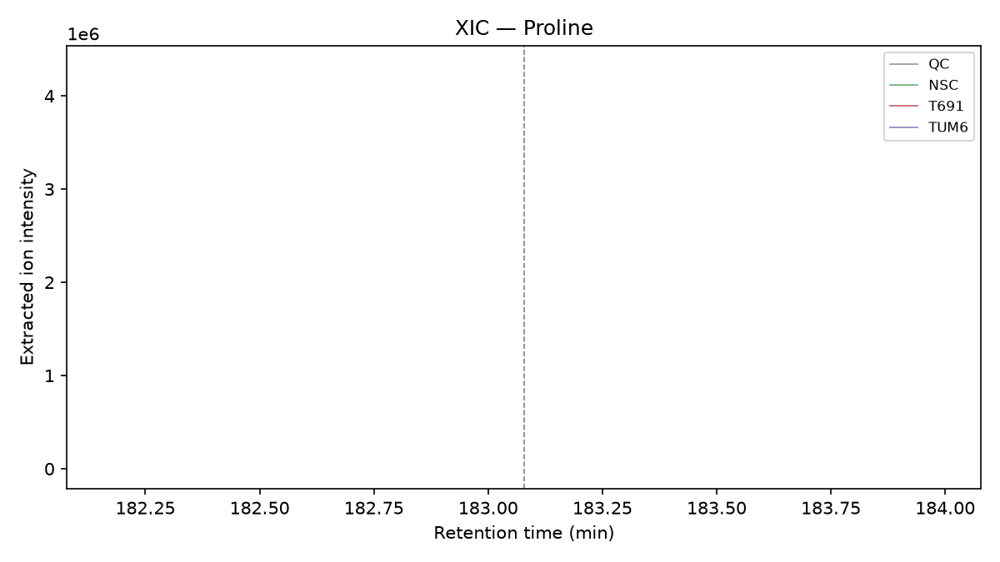

Volcano plots
Three pairwise comparisons across the non-QC cell lines. Welch's
t-test + BH-FDR correction, fc_threshold=1.0,
fdr_threshold=0.05. T691_vs_TUM6 is the strongest
signal — and notably so: it has the fewest tested
features of the three comparisons but by far the most hits,
meaning the effect size is genuinely larger, not an artifact of
which features happened to survive the presence filter.



Replicate sensitivity check
The heatmap (below) showed TUM6_rep_1 clustering apart from its own replicate group. Investigation found a real, quantifiable technical difference: rep_1 had the fewest detected features (4611, ~5–7% below its siblings) but the highest total intensity (~10–28% above them) — consistent with a mild ion-suppression/matrix effect, not a data-quality failure. RT range, m/z range, and TIC shape were all normal.
To check whether this was inflating the T691_vs_TUM6 signal, that comparison was re-run with TUM6_rep_1 excluded (n=2):
| Full (n=3) | rep_1 excluded (n=2) | |
|---|---|---|
| NSC_vs_T691 | 1 significant | 1 significant — unchanged |
| NSC_vs_TUM6 | 0 significant | 0 significant — unchanged |
| T691_vs_TUM6 | 14 significant | 4 significant — ~29% survival |
PLS-DA
Independent line of evidence for the same signal: clean 3-way separation of NSC/T691/TUM6, validated with leave-one-out cross-validation and a permutation test rather than just eyeballing the score plot (PLS-DA will find some separating direction even in noise at small n).

Heatmap
Top-variance library-matched features, row z-scored, hierarchically clustered on both axes. TUM6_rep_1's separate branch is what triggered the sensitivity investigation above.

XIC verification
Chromatographic verification for the volcano-significant features — does the statistical hit correspond to a real, clean peak? Both plausible for HILIC negative mode: small, early-eluting polar metabolites.



feature_id sharing the same compound name; worth confirming they share an adduct_group_id (expected) rather than being a coincidental double-match